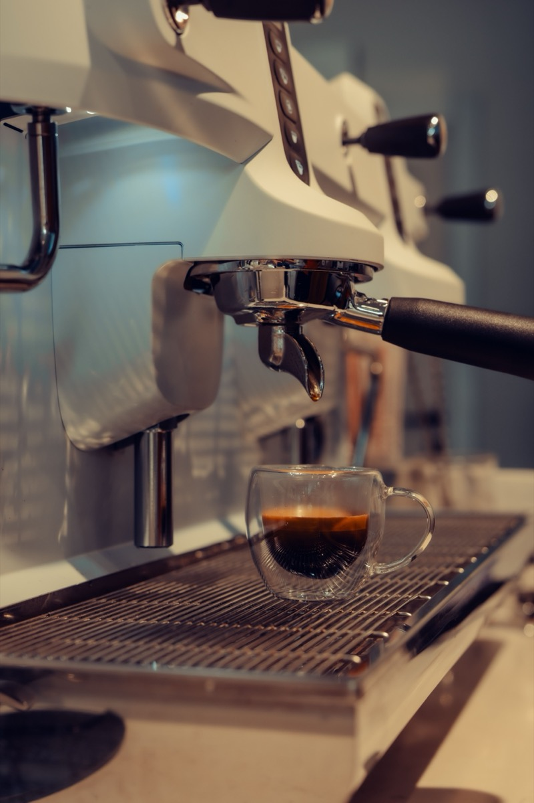
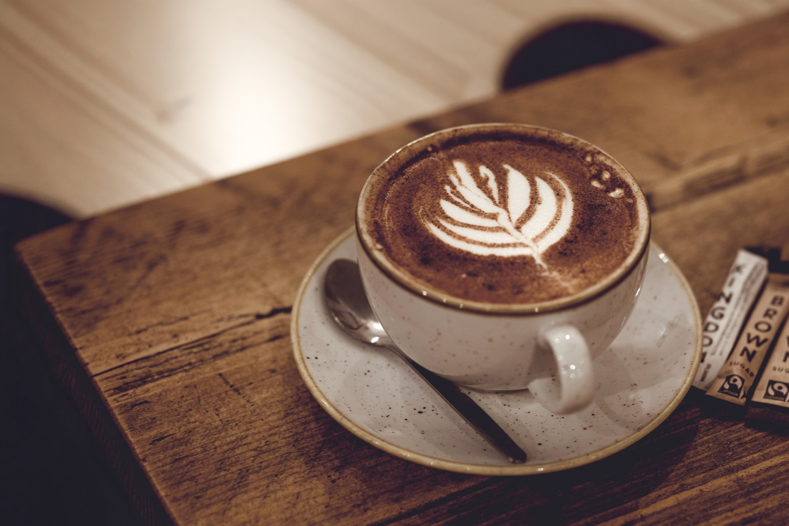
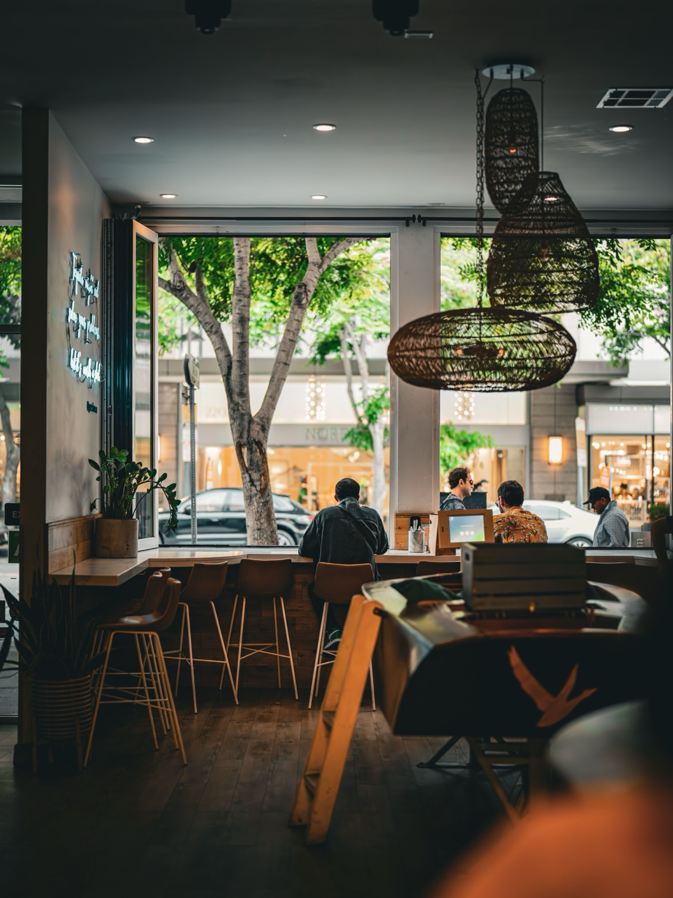
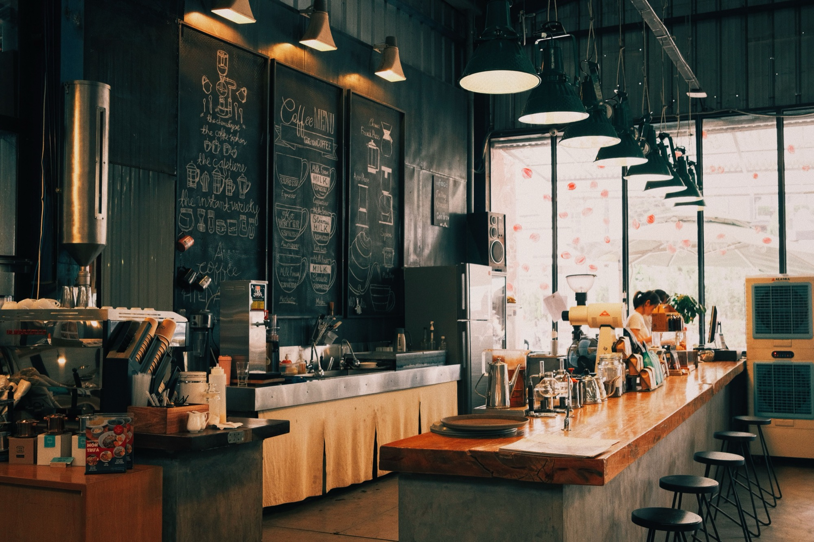
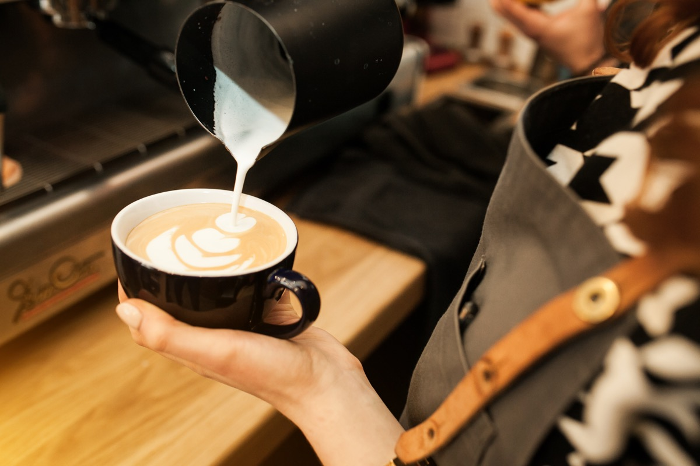
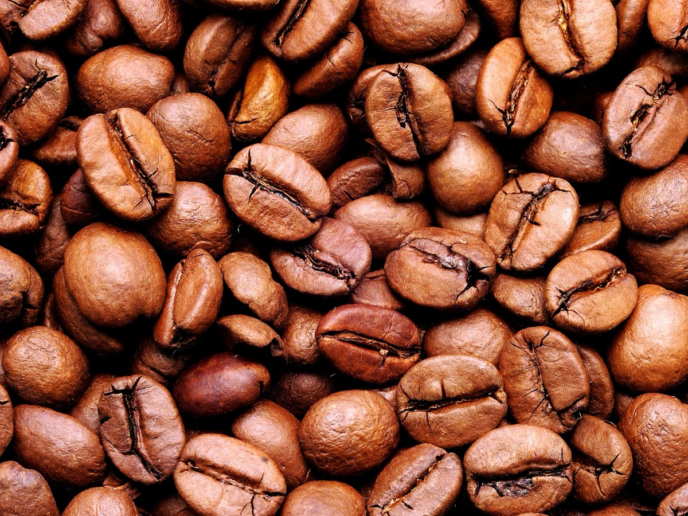
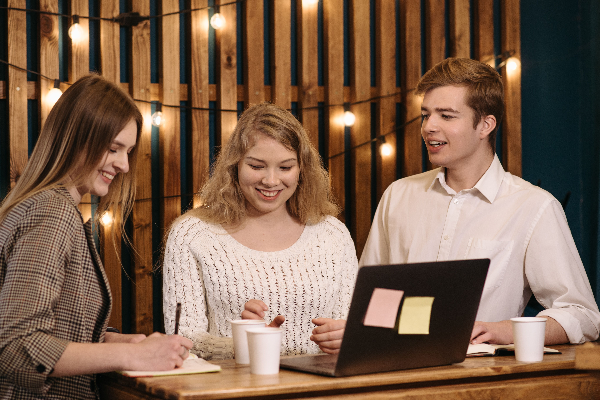
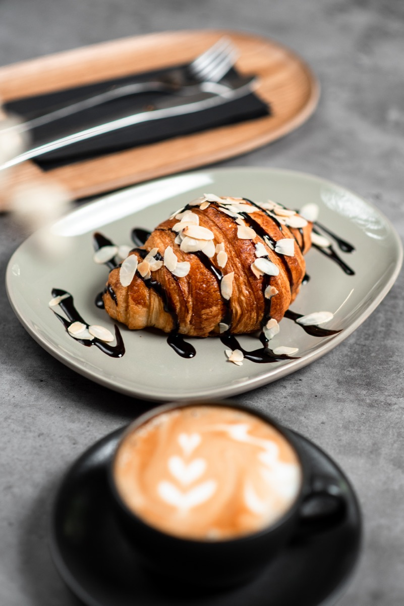

Kaffestræde 7 · København N
Kaffe, der får dig lyst til at blive.
MokkaBar er en lokal kaffebar i København N med espresso, cappuccino, café latte og andre klassiske kaffedrikke. Her er plads til dig, der vil have en god kop kaffe og et roligt sted at sidde – alene, med venner eller med computeren.


Om MokkaBar
Et lille sted med god tid.
MokkaBar er en lokal kaffebar på Kaffestræde i København N. Vi laver klassiske kaffedrikke på espresso, fra en ren espresso til mocha med mørk chokolade. Vores bønner er specialkaffe fra Colombia og Etiopien, ristet i små portioner hos Kaffestrædets Risteri.
Tag en ven med, slå computeren op, eller nyd en kop helt for dig selv. Her er der rart at være, uanset hvad dagen bringer.
Find din yndlingskop
Forskellen på vores kaffedrikke.
Alle kaffedrikke på menuen starter med espresso. Forskellen ligger i, hvad der kommer oveni: vand, mælk, mælkeskum eller chokolade.
| Drik | Hvad er i koppen | Smag |
|---|---|---|
| Espresso | Ren espresso | Intens og rund |
| Americano | Espresso og varmt vand | Klar og fyldig |
| Cappuccino | Espresso, varm mælk og et tykt lag mælkeskum | Balance mellem kaffe og mælk |
| Café latte | Dobbelt espresso og en stor portion varm mælk | Mild og cremet |
| Flat white | Dobbelt espresso og et tyndt lag cremet mælk | Tydelig kaffesmag med blød mælk |
| Mocha | Espresso, mørk chokolade og varm mælk | Chokoladeagtig og fyldig |
Kaffeord kort forklaret
- Espresso
- En lille, kraftig kop kaffe, der laves ved at presse varmt vand gennem finmalet kaffe under højt tryk. Den er basen i alle vores kaffedrikke.
- Dobbelt espresso
- To portioner espresso i samme kop. Det giver mere kaffesmag, især i drikke med meget mælk.
- Mælkeskum
- Mælk, der er varmet og pisket op med damp, så den bliver luftig. En cappuccino har et tykt lag mælkeskum.
- Mikroskum
- Meget fint og cremet mælkeskum med små bobler. Det bruges i flat white og til mønstre i mælken, også kaldet latte art.
De små ting gør forskellen.
Derfor kommer man igen
-
Kaffe med omtanke
Alle vores kaffedrikke starter med en espresso, som vi laver, når du bestiller.
-
Ro midt i dagen
Sæt dig godt til rette med en bog, en computer eller bare dine egne tanker.
-
Plads til hinanden
Et uformelt sted at mødes, vende dagen og lade samtalen tage den tid, den tager.
Nyd den gode stemning
Et kig indenfor





Gæsternes ord
Det siger vores gæster.
“Min faste pause på vej hjem. God kaffe, og der er altid en rar stemning.”
“Et dejligt sted at sidde med computeren et par timer. Flat white er virkelig god.”
“Jeg kommer ofte forbi med en veninde. Virkelig lækkert sted!”
Godt at vide før du kommer
Ofte stillede spørgsmål.
Hvad kan jeg få hos MokkaBar?
Vi serverer seks klassiske kaffedrikke: espresso, americano, cappuccino, café latte, flat white og mocha.
Hvad koster en kop kaffe?
Priserne går fra 32 kr. for en espresso til 52 kr. for en mocha.
Hvad er forskellen på en café latte og en flat white?
Begge laves med dobbelt espresso. En café latte har mere mælk og smager mildere. En flat white har et tyndt lag cremet mælk, så kaffesmagen står tydeligere frem.
Hvornår har MokkaBar åbent?
Mandag–fredag kl. 07.30–18.00, lørdag kl. 08.30–17.00 og søndag kl. 09.00–16.00.
Hvor ligger MokkaBar?
Kaffestræde 7, 2200 København N.
Må jeg sidde og arbejde med min computer?
Ja. Du er velkommen til at slå computeren op og blive et stykke tid.
Kontakt
Kom ind, og bliv lidt.
Kig forbi til en kop kaffe. Her finder du adresse og åbningstider, og du kan skrive til os, hvis du har spørgsmål.
Find os
Kaffestræde 72200 København N
Åbningstider
- Mandag–fredag
- 07.30–18.00
- Lørdag
- 08.30–17.00
- Søndag
- 09.00–16.00